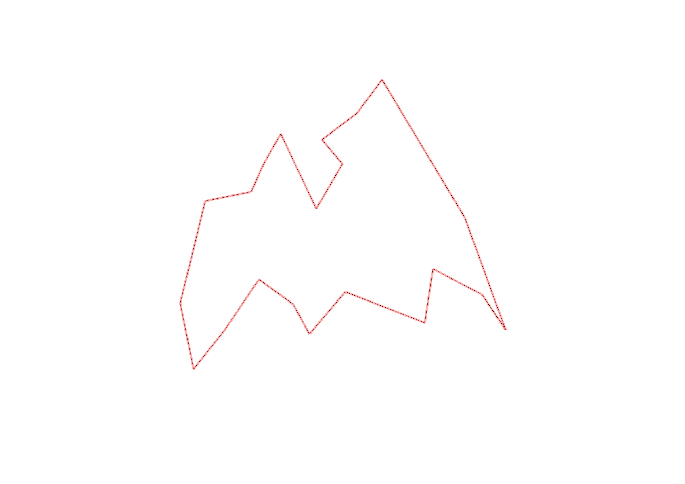
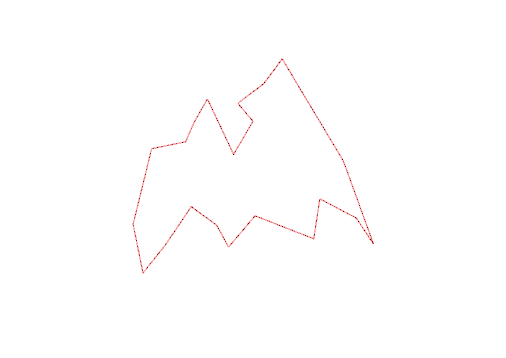

| Control |
Points |
Time Punched |
Distance |
Your Time |
Pace |
Place |
Fastest Time |
Median Time |
% Behind Fastest |
| 41 |
40 |
|
0.34 |
0:01:55 |
05:38 |
1 / 1 |
0:01:55 |
0:01:55 |
0% |
| 36 |
30 |
|
0.41 |
0:02:33 |
06:13 |
1 / 1 |
0:02:33 |
0:02:33 |
0% |
| 83 |
80 |
|
0.28 |
0:03:09 |
11:14 |
1 / 1 |
0:03:09 |
0:03:09 |
0% |
| 60 |
60 |
|
0.23 |
0:02:51 |
12:23 |
1 / 1 |
0:02:51 |
0:02:51 |
0% |
| 81 |
80 |
|
0.37 |
0:02:20 |
06:18 |
1 / 1 |
0:02:20 |
0:02:20 |
0% |
| 57 |
50 |
|
0.57 |
0:03:04 |
05:22 |
1 / 6 |
0:03:04 |
0:03:27 |
0% |
| 64 |
60 |
|
0.37 |
0:03:26 |
09:16 |
2 / 3 |
0:02:41 |
0:03:26 |
27% |
| 75 |
70 |
|
0.37 |
0:02:34 |
06:56 |
2 / 3 |
0:02:02 |
0:02:34 |
26% |
| 55 |
50 |
|
0.28 |
0:03:23 |
12:04 |
1 / 1 |
0:03:23 |
0:03:23 |
0% |
| 101 |
100 |
|
0.8 |
0:04:27 |
05:33 |
1 / 1 |
0:04:27 |
0:04:27 |
0% |
| 43 |
40 |
|
1.08 |
0:04:52 |
04:30 |
3 / 4 |
0:03:57 |
0:04:35 |
23% |
| 94 |
90 |
|
0.28 |
0:02:14 |
07:58 |
2 / 4 |
0:01:44 |
0:02:18 |
28% |
| 47 |
40 |
|
0.3 |
0:02:01 |
06:43 |
3 / 5 |
0:01:40 |
0:02:01 |
21% |
| 67 |
60 |
|
0.21 |
0:02:39 |
12:37 |
2 / 3 |
0:01:51 |
0:02:39 |
43% |
| 102 |
100 |
|
0.35 |
0:02:49 |
08:02 |
3 / 3 |
0:02:01 |
0:02:33 |
39% |
| 32 |
30 |
|
0.56 |
0:02:51 |
05:05 |
1 / 1 |
0:02:51 |
0:02:51 |
0% |
| 77 |
70 |
|
0.25 |
0:01:49 |
07:16 |
1 / 2 |
0:01:49 |
0:01:54 |
0% |
| 39 |
30 |
|
0.19 |
0:03:12 |
16:50 |
3 / 3 |
0:02:12 |
0:02:13 |
45% |
| 44 |
40 |
|
0.31 |
0:03:25 |
11:01 |
1 / 2 |
0:03:25 |
0:03:32 |
0% |
| 58 |
50 |
|
0.7 |
0:04:45 |
06:47 |
1 / 1 |
0:04:45 |
0:04:45 |
0% |
| Finish |
0 |
|
0.45 |
0:02:54 |
06:26 |
1 / 1 |
0:02:54 |
0:02:54 |
0% |
Total Distance Covered: 8.7km
Points Scored: 1170
Late Penalty: -80
Final Score: 1090
Total Time: 1hours 3minutes 13seconds
Efficiency: 125.29 points/km
 
